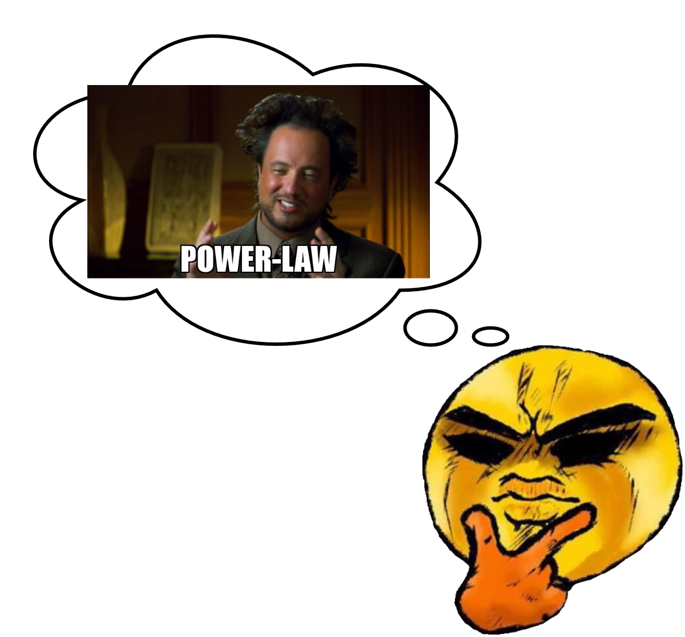

Maybe you were swimming at the beach this summer and were lucky enough to encounter a school of fish, all moving in a perfectly synchronized manner between currents and other underwater by-passers. Or perhaps you have been amazed witnessing the explosion of popularity of a certain meme on the internet. You may even have wondered how an electrical impulse between neurons turns into a memory, a feeling, or a thought. If this is the case, you already have something in common with a complex network scientist.

We are three students from the Master in Physics of Complex Systems at the university of the Balearic Islands (UIB) organised by the Institute for Cross-Disciplinary Physics and Complex Systems (IFISC) with a mission: to spread the passion for complex systems and the knowledge of their presence in our lives.